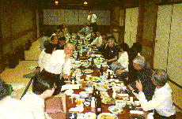
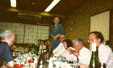
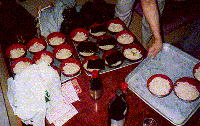

平成１０年５月２８日の夕刻、江戸のうどん通が一堂に会した。総勢４０名。神田「太田姫神社」の向かいにある料亭「昇龍」の２階座敷。
当日の午後５時４０分、開会を半刻後に控えて、久保先輩（２７卒）から電話があった。もめてるので、先に会場に行くとのことであった。
今回の会合は、高島監督（４８年卒）が製作中の映画「恐るべき讃岐うどん」の話を聞きながら、讃岐うどん作りの久保名人（２９年卒）からうどんの話を聞いて、且つ、名人の手打ちうどんを食おうという趣向である。
その為に、久保先輩（こちらは２７年卒で、２９年卒の久保先輩の兄である、以下では「久保兄先輩」「久保弟先輩」と区別する）は、事前に料亭に話をつけ、当日の２日前には、ワインの巨匠伊達久美ちゃんと一緒に３人で下見まで行って、我々も主人に会って、当日は久保弟先輩の準備したうどんを厨房で茹でさせて貰えることや、当日フランス製のフォアグラ、ワインを持ち込むことの了解を得た。
こういうことで安心していたのだが、何かモメてるという。
久保兄先輩に話を聞くと「俺の弟（久保弟先輩のこと）が、作務衣姿で店に赴き、うどん作りを厨房でやろうとしたから、女将が、びっくりして、得体の知れないおっさんに厨房を使わせる訳にはいかないと言うとるらしいよ」とのことであった。
久保兄先輩は、「俺が今から行って話をつけてくるわ」ということであったので、安心してお願いした。
久保兄先輩は労働運動で鍛えた交渉術があり、争議で解決しなかったものは多いが、久保先輩が入って解決しなかったモメゴトは皆無、久保兄先輩が登場した途端に、それだけで解決するという伝説がある位だから、全く安心してお任せできる。
定刻前に会場に行ってみると、話を付けた久保兄弟先輩といつものように定刻前に出席されている宮本・吉田の両先輩（２７年卒）がにこやかに談笑中であった。
さすが、久保兄先輩、簡単に話をつけたらしい。

にこやかに談笑中の久保弟先輩は、作務衣を着て頭には鉢巻きを巻いており、やる気充分の態勢である。
作務衣の背中には「うどんおじさん」と書かれている。この姿で、全国的に講演をしたり教室を開いたりしているとのことである。
久保兄先輩は、２７年卒だから、もう６５歳であるが、黒髪ふさふさとして、久保式健康道場と称して全国講演をしている。
弟先輩の方は黒髪は寂しくなっているが、元気一杯でうどんの手打ちの全国講演・実演をしている。
兄弟共通して、全国講演の行脚が趣味という、似たもの兄弟である。
弟先輩が鉢巻きを締めていることが話題になって、弟先輩が、うどんに髪の毛が入ると失礼になるので鉢巻きを締めていると言うと、兄の方では、「お前、そんなに落ちる程、毛がないやないか」と言って冷やかす。
久保弟先輩は、既に「讃岐うどん」についてのレジメを用意されており、そこに、うどんは「ハレ」用の食べ物であるのに比して、そばなどは「ケ（日常生活）」用の食べ物でしかない」という記載があった。
久保兄は、これを見て、「お前には生活がないのお」と言う。
弟先輩の方は、生活がないと言われてキョトとする。
何たって、久保弟先輩の方は、ＮＨＫのディレクターとして活躍された方で、今でも週の前半はフリーのディレクターとしてＮＨＫに行っている程である。
「生活がないとは何だ」と聞くと、兄は、「生活がケだろう、お前はケがないやないか」
まあ、仲の良いご兄弟である。
こんな調子で雑談をしている内に、定刻６時２４分になった。
会場には４０人分の座蒲団があり、７割位の集まりである。本日のもう一人の主役の高嶋監督は少し遅れるとのことである。
そこで、まずは「乾杯の稽古」をして暫定的に開始する。
中村先輩からお言葉がある。
何たって、中村先輩は、高中の５０回卒というから昭和２０年卒なのだ。
昭和２０年というと、私だって生まれたばかりで、本日の出席者では、まだ生まれてない方がむしろ多い。
今日出席の太田馨子さんが平成７年卒というから、中村先輩とは、丁度５０年、半世紀の差があるのだ。
久保兄先輩の発言を借りれば、我々のご先祖様みたいなものである。
中村先輩は、有名な美術コレクターで、玉翠会の美術愛好会の主でもある。
同じ美術愛好会の久保先輩から、この会を聞いて、面白そうだと参加戴いた。
さすが著名な美術コレクターである。鑑識眼の鋭さから、わが会の素晴らしさを見抜いての参加なのだ。
中村先輩、現在は会社の会長職で月水金のみ出勤で、本日木曜日は休みで、本来は家庭で休息するはずであるが、わが会出席のために東久留米の自宅から、神田まで来られた。
でもよくよく話を聞くと、朝から画廊めぐりをして２０数軒の画廊を見て、神田の会場に来たが時間がまだあったので、２０分もある画廊を覗きに行ったそうである。いやはや元気そのものだ。
久保弟先輩のうどんの話が始まった。
（以下、久保弟先輩の話）
「高々神田会」第７回寄り合いの案内をいただき、喜びと緊張に、ふんどし、もとい、下帯を締め直して、ここに出席しています。
幼少の頃から、私にとっての最大のご馳走である「手打ちうどん」は、個人の人生史の中で、趣味から、この美味とそれを期待して手打ちする没我の境地に誘ったのです。
第一次の人生史を締め括った後の数年、国内的、あるいは海外の人をも含めて、「うどん」を食べてもらう機会を数限りなく催しました。
私の弟子と称する人も５０人を超えています。
高々２９年卒が毎月第二金曜日四谷のバー「チロ」に集まるのですが、そこへ数回、私の作品を出し、「まずは結構」という評価を得ていることを報告します。
しかし、本日ここに讃岐の生粋の″手打ちうどん喰い″の人たちに、私の作品を献上するにいたり、″恐るべき″緊張に囚われているのです。
この恐ろしさから逃れるため、「恐るべき数々」を思いつくまま述べておきます。
『かたい腰のあるうどんの生産地は、女権が確立されている。』
女系が強いさぬきうどんには腰がある。これは私が論理づけた久保学説です。
理由は、女系が強いところでは、男性がつくるので、水分は少なめで、よく捏ねる。
力があるので麺が締まるのです。
ところが、九州の男性社会の麺は、ずるずるです。
理由は、「男子厨房に入るべからず」の習慣で、九州の手打ちうどんは、おばあちゃん、細君の作業となり、力不足を加水量を多くして補うからです。
この学説は、全国向けの放送や、各地のうどん作りの指導などでも、誰からも反論がありません。
かくてこの仮説は、「学説＝真理」となって定着しつつあります。
『元弟子のタイの女性』
タイから来た東京大学教育学部の大学院研修生が、「さぬき手打ちうどん」の妙味に魅せられ、香川県にうどんの勉強に行き、バンコクに「さぬきうどん」の店を開店しました。
「さぬきうどん」は国際的味とパワーを発揮しました。
私も若干の技術指導をしました。
しかし、彼女は私から離れて行きました。
日本人とタイの習慣の違いです。
一言で言えば、時間・約束は守らない。こちらの好意は当然ということで、一度、″約束は守らねば！″と叱りましたら、師弟の関係は消えました。
「さぬき手打ちうどん」は手順を抜くとうまく出来ません。果たしてバンコクへ輸出された「さぬきうどん」は根付くのでしょうか。
『トムヤンクンうどん』
タイの人との関係で思い出しましが、日タイ交流という催しが軽井沢で去年５月開かれました。″うどんおじさん″も、のこのこと行って、″さぬきうどん″を提供しました。
その時、タイから来た若者（とは言えエリート達だったのですね）が、手料理の「トムヤンクン」を作りました。
そこで私は提案しました。
「このトムヤンクンに私の手打ちうどんを入れて食べてみて下さい。」と。
実に味が調和して、大成功でした。
″恐るべしさぬきうどん″です。
この異国の、あるいは独特の個性を持ったスープを、″さぬきうどん″は、やさしく、しかし、しなやかに包含・・・・いや抱擁して、得も言われぬ味覚にアウフ・ヘーベンしたのです。
母親の懐並みの暖かさです。
『さぬきうどんの厳しさ』
とはいえ、″恐るべきさぬきうどん″は呵責なく厳格です。
うどん粉に水を加え、麺を練ります。
塩水を加えて、捏ね上げて６時間寝かせて熟成させます。
粉の時の水の量が１％狂うと、上手に麺が仕上がりません。
１％に神経を使うのは、その日の天候、特に湿度と気温です。
塩の量も関係します。
計量カップで定量どおりにしても違っています。そこをどうクリアーするか。これは体験の積み重ねしかないのでしょうか。
厳かなる神秘性です。
最近、私は″手打ちうどん″に使う″水″に凝っています。
もともと、うどんの材料は小麦粉と塩と水です。
うどん打ちはそれぞれ、これが最上というものを使っているでしょうが、私の場合、粉はＡ・Ｐ・Ｗ「オーストラリアン・プレシァス・ホワイト」日本がオーストラリアで技術指導して作り上げた粉で、白く光るところが目に涼やかです。
塩は「伯多］です。
瀬戸内で塩の本場だった坂出も工業地帯になって、塩がなくなりました。
そこで、隣の愛媛県の島で作られた塩が良いと採用したものです。島がよいのは、潮水が本土の廃水から離れていて、自然の純度が高いからです。
さて水です。
これまで水道水（町田）を汲み置きして作っていましたが、友人のサジェストで、″イオン水″（アルカリ）をこのところ使っています。
この水は出羽三山の水をイオン化したもので、分子活動が水道水の３００倍といわれています。
その結果、未だ安定しないのですが、水量を減らしても、麺がイキイキとして、美味しいのです。
６時間寝かすと言っていましたが、１時間で熟成に近くなります。
研究を重ねて究めたいと思っています。
『腰・こし、コシ』
讃岐うどんのコシ＝腰の強さは、香川の人間には最高の魅力です。
ところが、これは国際的、国内的に通用しなくなって来たようです。
腰を強めるため、私は足で踏んでグルテン化を促して、いい気分でした。
ところが、現在の食生活においては食物の軟化が進んでいるため、例えば、九州・島根などで作ると、「もっと食べやすく、コシをつけないで欲しい」と注文がつきました。
高齢化社会になって咀嚼力が弱まって来たことが背景にあります。
手打ちうどんは麺の太さ、長さが自在に調節できます。
「麺作り戯画」で長い長いうどんを苦労して食べている風景は、大変愉快なものです。
だが、うどん大好きの兄（２７年卒）は、「お前のうどんは長うて、食いずらい」と文句を言うのです。これは口に出していませんが、面白くないのです。
「さぬきうどん」作りにはいろいろ報告したいことも多いのですが、キリがありません。
この辺で一旦切り上げます。
『文化論ーうどん対そば』
しかし是非触れておかねばならぬことは、「うどん」と「そば」の文化比較論です。
中国で発達した饂飩（小麦粉の麺）は、シルクロードで、西はヨーロッパ（イタリアなど）へ伝えられて、スパゲッティ、マカロニとなりました。
東に進んで朝鮮半島から日本に来たのがうどんとなりました。
南に伝えられたのが米の産地タイ・ベトナムに入って、原材料からビーフンになったのです。紀元前数世紀です。
日本ではやがて平安時代頃、「うどん」は宮廷料理として「ハレ」お祭り、祝賀の料理となり、やがて、中世に麺切り技術が進んで庶民の食生活の中に定着して行ったのです。
これに対して「そば」は、江戸時代の飢饉で餓死者が出た時、食生活を満たすため「救荒食物」として庶民の中に広がりました。
生存のためのギリギリの粗食だったのです。「生活」＝「ケ」の食物だったのです。
ところが、今日、東京を中心に、"そば"には文化があるという妄言が出てきました。
その背景に、食べ物に貧しい江戸の文化人たちが、粗食をする精神のみじめさから、"そば"作りの苦労、工夫を高貴な精神活動に置きかえて、文化に仕立て上げたのです。
文学などを較べるとうどんは登場する例は少ないのです。その結果、"うどん"は、やや"そば"の後塵を拝しています。
イソップの「酸っぱいブドウ」、あるいは心理学の「代償行為」で不味い"そば"は富貴であり、「これを理解できないうどん派の連中は粋でない俗物だ」という考えが定着してしまったのです。
純粋に味覚だけで「うどん」と「そば」を比較して欲しいと常々思っています。
『恐るべき讃岐うどんより恐るべきもの－おまけ』
「恐るべき讃岐うどん」を食う会の参加に当たり、妻は言います。
「貴方はうどんを提供し、皆さんが食べているのを見て喜んでいます。しかし、経費は全くの持ち出し、大変な赤字です。恐るべきは、讃岐手打ちうどんにハマッたあなたではないかと」
以上は、うどんおじさんの話を久保先輩のレジメから転載して再現した。
このように書くと、久保先輩の話を皆が真面目に静かに聞いていたように誤解されるかも知れない。
しかし、わが神田会で、静かに講演できた例は全くない。
中村先輩の乾杯の後は、みんな飲み食いと隣近所の雑談に忙しい。
いつもの神田会である。
始めて参加する久保弟先輩は、全国講演の聴衆と同じだと思って、いっぱい話そうと考えたかもしれないが、そうはどっこい問屋が卸さないし、小売も売れない。
多分、兄貴先輩から、神田会は喧しいと少しは覚悟をされていたはずだが、これほど喧しいとは思われなかったに相違ない。
しかし、久保弟先輩は、ここで挫けない。テノール歌手でもあるので、幾ら喧しくても負けるものかと、大声で対戦する。
会場の喧しさと、久保弟先輩の大声の対決だ。
本日初参加の中村先輩が、余りの喧しさに、これは講演者に失礼である、静かにさせろと久保兄先輩に忠告されたそうである。
ところが、久保兄先輩は、中村先輩に、神田会は、講演中は呑み食い自由、雑談自由、質問即ＯＫでやっており、講演者とは言わずに雑談コーディネータと言うことになっているので、この騒がしさを止められないのです、と大先輩に抵抗したそうである。
そんなやりとりこそが、講演にとっては雑談で講演妨害なのではあるが、しかしそれはそれで、ともかく盛り上がったいるのだから、神田会としては、歓迎なのだ。
参加者が何でも良いから盛り上がれば良いという、極めて無責任ないい加減な会合なのだ。
勿論、全体の盛り上がりが一番肝要なことである、が。
このようにして、ともかく盛り上がった。
会場の中には、トムヤンクンうどんを今度是非とも食ってみたいとの声もあったし、うどんおじさんの実演をどこかで見たいという者もいたり弟子入り希望者もいた。
だから、騒がしくても聞いている者は聞いているのだ。
後で聞いたが、若い参加者の中には、この会の後の土曜日に、早速自宅でうどんを打ったという者もいた。
このようにして手打ちうどんの伝統が承継されるとされれば、講演者も本望の筈だ－と勝手に思うことにしたい。
うどんの話が終わった頃に、多忙で遅れてきた高嶋監督（４８年卒）からは、映画「恐るべき『讃岐うどん』」製作の実情が報告された。
高島監督の話では、シナリオを作って、資金集めをして映画作りに入るそうだが、シナリオ作ってスポンサーに高松の本屋さんにあたったところ、面白くないと言われて、現在、面白くするためにシナリオの練り直しをしているようだ。
映画を作るのには少なくとも家一戸分の資金が必要で、その資金集めが苦労のようである。
配付された参考資料の映画の企画書に、簡単な粗筋が書いてあった。
ざっと読んだ者から、おー野球少年ね、高校３年生の夏か、青春映画はエエナーという声があった。
また、書き直し案の粗筋は、都会から転勤で高松支店に来たものが讃岐うどんに出会うというコメディタッチであった。
こうやってみると、映画作りの大変さが分かる。

この後、久保先輩が実際に前の夜から準備され、料亭の厨房を借りて準備されたうどんが配られたが。しかし、４０人も集まったためににあっという間になくなった。
４０人の構成が、前述のとおり、年長は中村先輩（昭和２０年５０回卒）で、若手は、原木君（昭和６０年卒）、太田馨子さん（平成７年卒）で、その差は半世紀であるが、いずれもうどん好きときているから、みんな一口で流し込んで、あっと言う間もなく食った後で、あれっという程で、瞬間芸のような具合であった。
この日は、伊達さんが用意したフランス製のフォアグラとワインもだされた。
フォアグラをつけて食うべきフランスパンは、久保（兄）先輩が会の始まる前に買ってきて戴いた（あっ、その料金を払ってないぞ、今頃気付いたーもう遅いから支払う訳にはいかず、ここでお礼だけでも言っておこう－久保先輩ごちそう様でした）。
そうい言えば、久保兄先輩は、このパンを切る為のパン用包丁も刃物屋で購入されて準備戴いた。
何から何まで、久保兄弟先輩にお世話になった会合であったことを、改めて気付き、ここに特に記して感謝申し上げます。
ワインとフォアグラのうどんとの相性を研究する予定であったが、うどんが出た途端、全員があっと言う間にうどんを食って、研究などした者は見られなかった。
でもフォアグラも、さすがに専門家の久美ちゃんがフランスから輸入してきただけあって、皆んなうまい、うまいと言って食い、少し残っていたのは、誰かが、「これ家に持って帰ろう」と言って持ちかえった。
多分、奥さんと子供に、フランスのフワアグラというのは、こういう物だと言いながら、仲良く食ったに違いない。
このような光景が持てただけでも、神田会の価値があるというものだ。
最後に参加者全員が、「うどんと私」と題して自己紹介をした。
高島監督には、このうどんと私という話で面白い話があれば、映画に使っても良いと各人が著作権の譲渡予約をしての話であった。
「高高の食堂のうどんを３時限終わって食った」というのは共通の話題であった。
これは、映画の一シーンには使えるが、まあオマケのシーンみたいなものだろう。
その中で大西先輩（３３年卒）の、豆の天麩羅うどんの話は意表をついた。
先輩曰く。
「高高の食堂のあの豆のテンプラうどん。あれはうまかった。」
ここで、会場の皆んな、一瞬びっくりしたが、あの豆のてんぷらの味を思い出した。
先輩曰く。
「あれこそが、本当のテンプラうどんや。あれこそがテンプラうどんという名前にふさわしい。」
会場から、そうだとの声があがり始める。
先輩曰く。
「あの豆のてんぷらうどんがテンプラうどんでなくて、何かテンプラうどんか。
江戸にでてきた時にテンプラうどんを注文したら、ダシが真っ黒や。
こりゃなんやと思ったぞ。
真っ黒なダシにもびっくりしたが、問題はじゃ、折角テンプラうどんを注文したのに、あの豆のてんぷらうどんが出て来んじゃないか。
江戸というところはなんちゅうところや」
この演説に、会場からは全員の「そうだ」「そうだ」の声が聞こえてくる。
先輩曰くも好調になってきた。
「あんな、江戸の海老の天麩羅なんぞが入っているのをテンプラうどんなんて言うなっちゅんじゃ」
「そうだ、そうだ」の合唱となってくる。
「おまけに、最近では冷凍えびではないか。中には、まだ解凍できてなくて、冷たい天麩羅まであるではないか」
「そうだ」
（小声で「でも、それは、まずいうどん屋に行ったんとちやう」との声あり）
「海老のテンプラうどんなどは、食ってるときに衣が剥がれるやないか。そんなものはてんぷらうどんとちゃう（違う）ぞ」
「そうだ」「そうだ」の合唱が復活する。
「豆のてんぷらうどんを見てみい。
豆のてんぷらはうどんを食ってても剥がれんぞ。豆の味が、ちゃんとうどんにおおとる（合っている）やないか。」
「そうだ」「そうだ」
「豆のテンプラとうどんの醸しだすハーモニーや。このハーモニーにこそ、テンプラうどんの醍醐味があるんじゃ。
そうじゃろ」
「そうだ」「その通り」
「あの豆のてんぷらを噛んで、豆の味とてんぷらのコロモの味が溶けているところにうどんを噛む。
うまいぞ－。」
「そうだ、うまいぞ」
「これこそが、てんぷらうどんじゃ」
「そうだ」
「やはり、てんぷらうどんは、豆のテンプラのうどんじゃ」
「そうだ」「そうだ」
いやぁ、盛り上がった。
「連絡船のうどんが最高」という話も満場一致の賛成を得た。
みんな、東京からの帰郷では、宇野から連絡船に乗ったら、すぐに船の中のうどんを食ったのだ。
潮風に吹かれながら、対岸の讃岐の島影をみながら食ったうどん。
これこそが故郷の味だったのだ。
うまいうどん屋の名前も出てきた。
三崎屋先輩（３４年卒）の東京訛が少し混じった高松弁の話は、いつものとおりの喝采であった。
あの連絡船のうどんは、ゲンヨシとか言ううどん屋さんで三崎屋先輩がよく知っている店のようだ。
中村先輩からは「長尾街道の某店はよく知っている」という話があった。
中に「今度行ってみよう。先輩の名前を出せば安くなりますか」と言う質問があったが、中村先輩は、 「そこで私の名前を出せばタダにしてくれるのでないか、と私が言ってましたと言うとタダになるかも知れない」と言われた。
さすが、直ちに、タダになるとは言わずに、間接話法のような手法でタダにする方法を伝授された。
さすが人生経験、見事な回答である。
私も、今度、そこに行って「中村先輩から『中村先輩の名前を言えば、タダにしてくれるのでないかと言うとタダになるかも知れない』と言われました」と言って、この間接話法を使ってみよう。
この他にも各々がうどんとの関わりを色々と話をしたが、私が別に映画作りをする訳ではないので、特にメモも取らなかったので、忘れてしまった（参加者の方ゴメン）。
ところで、私がうどんで思い出すと言えば、私が３歳の頃、その当時は香西に住んでいて、私の家の前に農協か何かの木造２階建ての建物があり、その２階でおっちゃん達が時々うどんを食っている姿が見えた。
それも、うどんが長いので、立ち上がって背伸びしながら食っていた（何せ２階で食っている姿が私の家の１階から見えた）。
長い手打ちうどんをワイワイ言いながら楽しんでいた姿が記憶に残っている。
考えてみれば、私の記憶で一番小さい時の記憶というのが、この記憶である
一番小さいときの記憶がうどんを食っている姿というのは、何だか情けない話であるが、生まれた時から、今日の会に参加することを宿命づけられていたとも考えられる。
そうだ、祭りになると、父母と職人さんが一緒になって手打ちうどんをワイワイ言いながら打っていた記憶も今突然蘇ってきた。
私が長ずるに及んで（と急に偉そうに言うこともないのだが）、高松に引っ越してからのウドンの記憶は、私の家がパンの製造をしていたので、職人さんがたくさんいて、昼飯には、うどんの玉を何セイロかうどんの玉屋さんから配達して貰って、みんな勝手に茹でて、出汁を自分でかけてうどんを食っていた。
うどん好きの人でダシなどをかけずに醤油だけをかけて、これが一番ウマイなんていいながら、あっと言う間に食っていた人もいたなんてことを思い出した。
私の家がパン屋だったせいで、食べ物などには全くコダワらない私ではあるが、うどんと合うパンを色々と試したことがあった。
そして結論としては、カツパンとうどんが合うことを発見した。私の人生の中での唯一の発見が、このカツパンと素うどんが合うということだ。
カツぱんというのは、本当のカツではなく、ハム（ソーセージ？）をフライにしたものをパンの間に挟んだやつである。
このカツパンと素うどんとを一緒に食うと本当にうまいのである。
これは余りポピュラーな食い方でないので経験された方は余りないであろうが、ともかく、これはいけるので、是非とも、これをお読みになった方は試して欲しい。
と言ってもいまどきハムをフライにしたカツパンなんてのがないだろうなあ。
まあ、うどんと合うものといえば、オーソドックスに言えば、おイナリさんであろう。
高松などでは、うどん屋でいなり寿司をおいていないというのはモグリみたいなものだが、東京のうどん屋は勉強不足で、いなりをおいてない店が結構ある。
神田にも最近さぬきうどんの看板をあげた店が開店したが、店に稲荷をおいてない。
不信心なことである。
何度かイナリを置くように忠告し、最近、イナリを時々おいている。
まだ時々しかおいてないところがマダマダ勉強不足で、讃岐うどんが何たるかが分かっていないと言わざるを得ない。
という私のうどんの関わりは、会場では当然していない。
折角盛り上がったうどんの会がこんな話ではぶち壊しである。
私がこんな話をしなかったために、会は最後まで大いに盛り上がった。
今回のうどんでは、うどん自体で盛大な盛り上がり、讃岐人のうどん好きは、まさに恐るべしと言うべきであった。